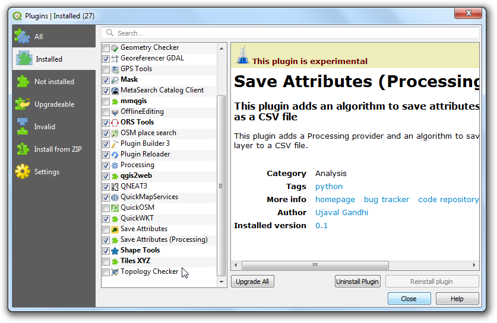
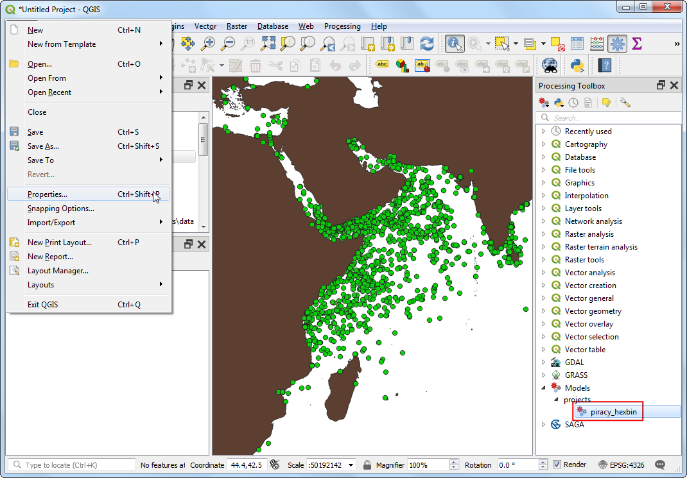
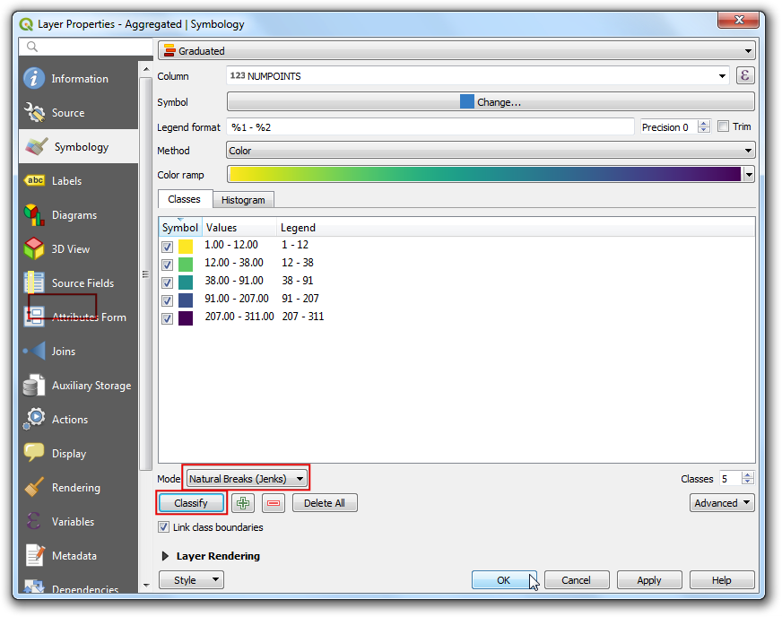
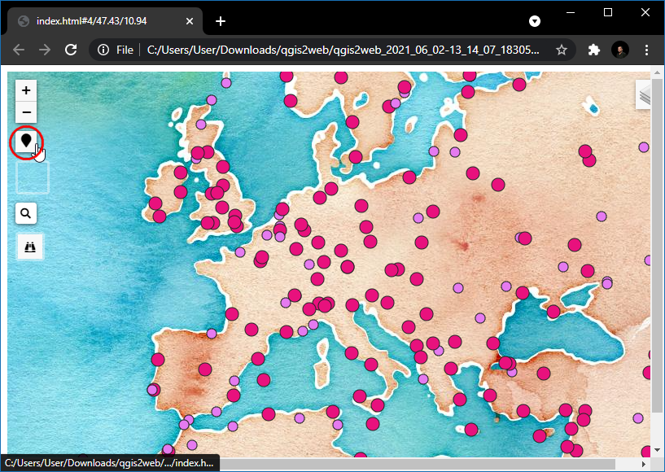
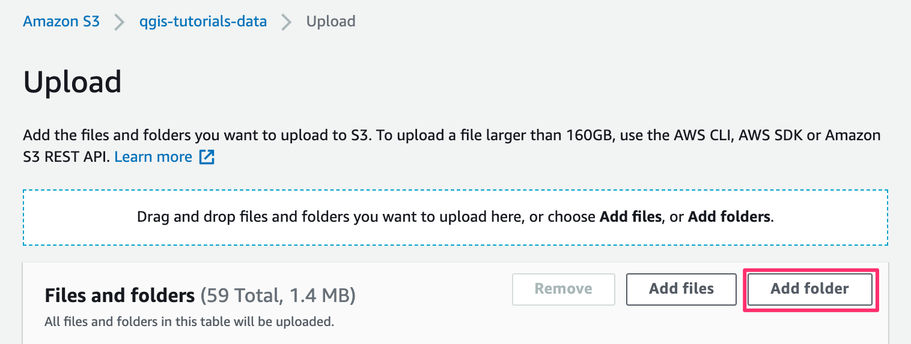

Web Mapping with QGIS2Web (QGIS3)¶
Web mapping is a great medium to publish your GIS data to the web and make it accessible to other users. Creating a web map is a very different process than creating one in a GIS. GIS users are typically aren’t web programmers and it presents a challenge when one needs to create a web map that is of the same quality as a map creating in a GIS. Fortunately, there are tools available to easily translate your work in QGIS to web maps. In this tutorial, you will learn how to use the QGIS2Web plugin to create a web map using OpenLayers or Leaflet libraries from your QGIS project.
Overview of the task¶
We will create a leaflet web map of the world’s airports.
Other skills you will learn¶
How to use Edit Widgets in QGIS to hide certain fields and set custom types.
How to create a virtual field using Field Calculator.
Get the data¶
We will use the Airports dataset from Natural Earth.
Download the Airports shapefile.
For convenience, you may directly download a copy of the datasets from the links below:
Data Source [NATURALEARTH]
Procedure¶
Open QGIS. Using the Browser panel, navigate to the folder containing the downloaded file. Expand the
ne_10m_airports.zipfile and drag thene_10m_airports.shpinto the canvas.

Now a new layer will be loaded in the canvas, we will now create a map in QGIS that looks and behaves just like we would like in the web map. The plugin
qgis2webwill use replicate the QGIS settings and automatically create the web map without us knowing about web mapping libraries. When a user clicks on an airport marker, we want an info-window to display useful information about the airport. This information is already present in the attribute table of thene_10m_airportslayers. Right-click on thene_10m_airportslayer and select Properties.

In the Layer Properties dialog box, switch to Attributes Form. You will notice all the fields name of the layer.

All fields aren’t relevant to the user, so fields except name, iata_code, type, and Wikipedia are turned off by clicking on the field and change the Widget Type to
Hidden.

In the wikipedia field check the
MultilineandHTMLso that the link present in this field will be rendered as a hyperlink for the user. After setting the respective Widget Type for each field, click OK.

Click on the Identify Features button in the toolbar.

Click on a point, this will fetch the details of the airport in that location, only the type, name, iata_code and wikipedia fields are displayed as other fields are hidden. Also, wikipedia field is highlighted as hyperlink.

The values in the field type can be a bit more informative. Let’s create a new field called class and add the word Airport after each entry in type field. (i.e) an entry as major will become a Major Airport.

Enter the Output field name as
class, chooseText(String)in Output field type. The layer fieldtypecontains values such assmall,mid,largeetc. We can add an expression to change the case of the words to sentence case and append the word airport for better readability. Enter the following expression in the Expression box and click OK.
concat( title("type"), ' Airport')
Opomba
You can also use concatenation || operator to join strings. The expression can be re-written as (title("type") || ' Airport')
Now we have a better looking field for airport type, we no longer need the type field. Right-click on the layer and select Properties, switch to Attributes Form and turn off the type field by switching the Widget Type to
Hidden. Click OK.

Now use Identify Features tool and select an airport, you will see a new field class with the category of airport nicely formatted and the type field is removed.

Now let’s style the layer, click on Open the Layer styling Panel icon and change the Type to
Categorized, in Value selectclassand click Classify.

You will see different colored circle gets assigned to a different type of airport. For this tutorial, we will restrict the map to civilian airports. Hold the Ctrl key and select all categories for military airports. Once selected, click Delete.

Apart from assigning different color to the category, we can change the size of the symbol to visually help our users distinguish different types of airports. Double-click on the symbol icon in
Major Airportto change the size.

Set the Size to
4, now follow the above step to set the size ofMid Airportas3andSmall Airportas2.

Let’s add a base layer for Geo-referencing,
Stamen Watercolorwould be a nice background map for this project, to add the layer select . To know more about this plugin visit Uporaba vtičnikov (QGIS3) tutorials.

Our map is now ready. This is a good time to save our work. Click on the Save Project icon in toolbar and Enter
Airportsas the name of the project.

Now we are ready to export our project to a web map. Install the qgis2web plugin by going to (See Uporaba vtičnikov (QGIS3) for more details on installing plugins in QGIS). Once the plugin is installed, go to .

Now Export to web map dialog box will appear. This is the primary console for customizing the web layout of your web map. The left-hand panel contains all the configuration options. You can change any setting and preview the updates on the right side by clicking the Update preview. The plugin can export the map using many different web mapping libraries. For this tutorial, we will use the Leaflet library. Make sure you have selected the Leaflet option at the bottom.

Now lets change the Popup fields of ne_10m_airport layer, change all the fields to
inline label, this will give a better view while inspecting the feature in map.

Now switch to the Appearance tab. Check the following boxes - Add address search, Geolocate user, Highlight on hover. In Add layer list: choose
Collapsed. For Layer search choosene_10m_airport: iata_codefield. This option adds a search box where the user to search for an airport with its code. Once made all the changes, click Update preview.

Now, let’s check the features added to the map, click on the Find (binocular) icon and type
DXBand press enter, this will center the map to Dubai international airport.

Click on the airport icon to explore the information about the airport.

Click the Search (Magnifying glass) icon, and search for
new yorkand press enter.

Now the map will be centered to new your city, you can try for any place/address to get the location, this location is retrieved using by geocoding the address. We will also add a measure too to get the linear distance between any given points in the web map. In Measure tool choose
Metric. Click Update preview.

Now lets measure the linear distance in SI units, between EWR and JFK airports. Click on the Measure (ruler) icon and select Create a new measurement. Then, click over the airports once the point is chosen, the latitude and longitude of the point are captured and used to compute the distance, now the distance is displayed in meters.

Switch to the Export tab and check the Minify GeoJSON files box. This reduces the size of the resulting file. Click on the … next to Exporter.

Choose the desired location (folder) of export and click Select Folder, then click Export button.

Now all properties, styling, and customized options are exported in a self-contained folder. Upon successful completion, a link will appear in the Progress popup dialog box, click on the link to open the file location.

This folder will contain all the required file to create a web map. To view the web map click on
index.htmlfile.

Opomba
The qgis2web plugin has many limitations and it cannot do everything that the powerful web mapping libraries OpenLayers and Leaflet can do. This process can act as the starting point in your web mapping process and save you valuable time by creating a basic template from which you can further customize the web map. You can edit these files in a code editor to customize as you wish.
The web-map will be rendered in your default web browser. Now, let’s test the last option added to map, (i.e) Geolocate user, click on the Marker icon.

Browser will ask for Know your location permission, click
Allow, now the map will center to your current location.

The exported map resides on your computer. While you can see it in action, it is not very useful since you cannot share it with anyone. For others to be able to see the map, you need to upload it to a web server. While the upload process will vary on the type of server you have access to - a cheap and easy way to publish your map on the web would be to use any of the public cloud storage services. Amazon S3 is a popular storage service that can be used to serve static web pages like our map. You will need to sign up for an account. Once your account is setyp, visit the AWS Console and follow the instructions to create a bucket.

Opomba
While AWS includes a generious Free-Tier, you may get charged fees for using this service if you exceed the free usage limits.
Once a bucket is created, you can upload the contents of your exported folder to the bucket.

If you want the map to be publicly accessible, make sure to select Grant public-read access while uploading.

Once the data is uploaded, locate the index.html file. The Object URL is the URL that can be used to access the map.

I have uploaded the files generated from this exercise to an AWS S3 bucket. The AWS-hosted version of the map is embedded via an IFrame below. You can also browse the map directly at https://qgis-tutorials-data.s3.us-east-2.amazonaws.com/qgis2web/index.html
If you want to report any issues with this tutorial, please comment below. (requires GitHub account)